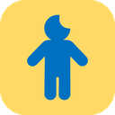

키는 aistudio.google.com 에서 무료로 발급받을 수 있어요. 키는 이 기기에만 저장됩니다.
아이폰 단축어가 걸음수를 아래 주소로 보내면, 앱을 열 때·돌아올 때·켜져 있는 동안 1시간마다 가져와 활동 칼로리를 계산합니다. 하루는 새벽 4시 기준이에요. 보낸 값은 12시간 보관돼요.
초기화하면 모든 기록이 지워지고 처음부터 다시 시작합니다. 먼저 엑셀이나 백업을 저장해 두세요.